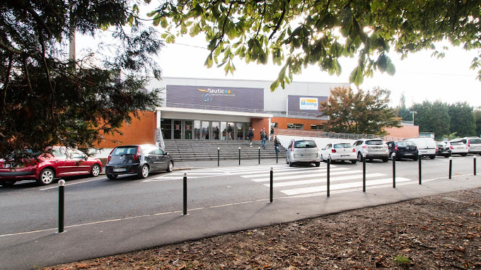

Le thème de la prochaine soirée ? CARNAVALLLLL
On se retrouve ce 8 Février 2023 à 19h30
pour la soirée Aqua que vous attendez tant !
Entrée au prix de 8€ avec buffet et boissons offertes.
Attention, il est nécessaire de réserver à l'accueil de notre centre
pour être sûr d'avoir votre place.
Plus d'informations par téléphone au 03.21.44.69.56 ou par message privé.

Horaires des soirées
Lundi et mercredi : A partir de 20h
Mardi : 18h30 - 22h
Jeudi : 19h - 23h
Vendredi : 18h - 23h30
Samedi et dimanche : 17h - 23h
Le centre aquatique Nauticaa se situe à côté du parc des Equipages. La piscine de Liévin se compose d’un bassin intérieur de 25 m, d’une pataugeoire avec toboggan, de jacuzzis et d’un espace remise en forme. Ouvert toute l’année à de larges horaires, la piscine Nauticaa propose plusieurs activités aquatiques : cours d’aquagym, d’aquabike, d’aquaphobie, cours de natation, etc.